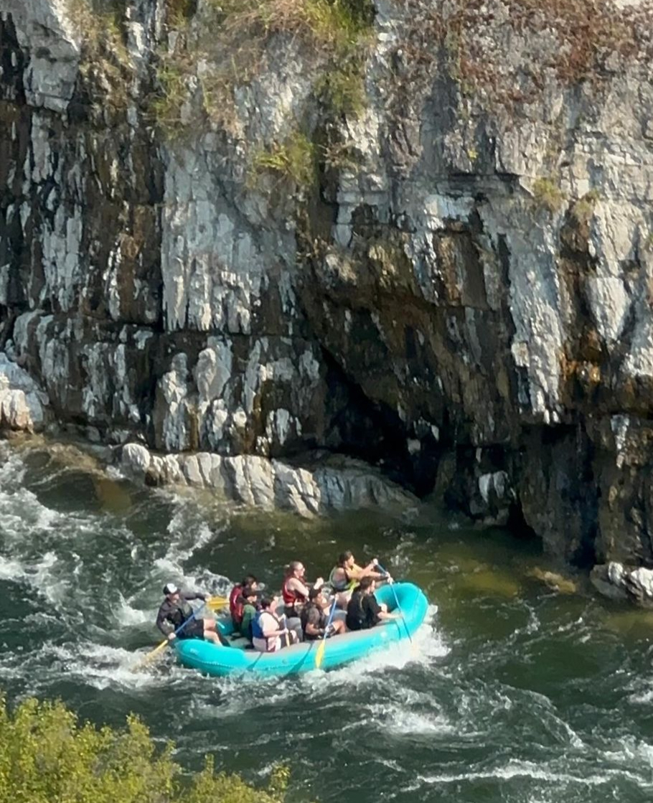
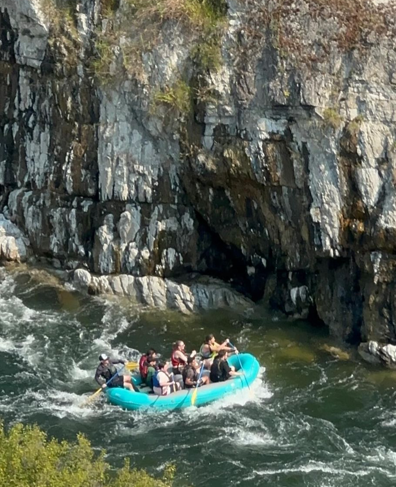
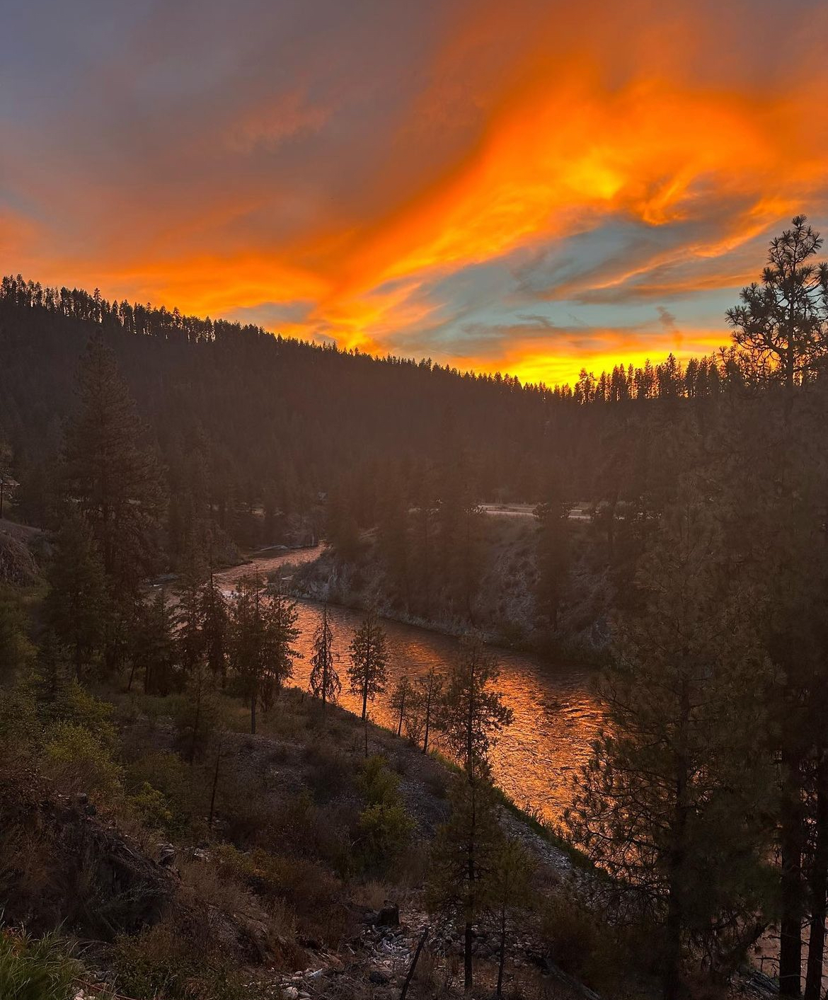
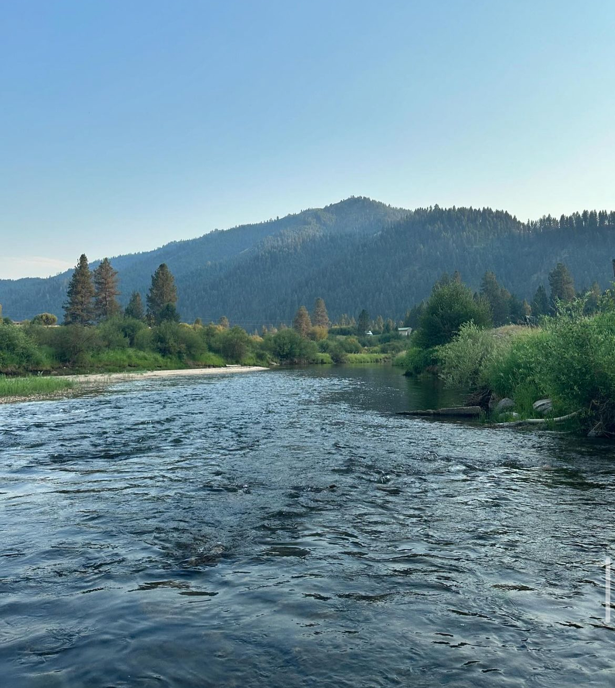
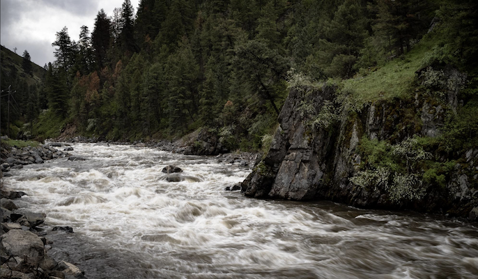

The Canyon Stretch of the South Fork of the Payette River in Idaho is a renowned section of whitewater, offering some of the most challenging and scenic rapids in the state. This stretch is approximately 7 miles long and is known for its Class III to Class V rapids, making it a popular destination for experienced kayakers, rafters, and thrill-seekers. The river winds through a deep canyon, with towering cliffs and rugged terrain, providing dramatic and awe-inspiring views as it flows through the heart of the Payette River's watershed.
The Swirly Canyon stretch of the South Fork of the Payette River in Idaho is a renowned section of whitewater, famous for its technical rapids and striking scenery. Swirly Canyon is named for its distinctive, swirling water features created by the tight, rocky gorge through which the river flows. The water moves in unpredictable ways, with eddies, waves, and small whirlpools that can catch paddlers off guard. This stretch is typically about 4 to 5 miles long and features a series of fast, swirling currents. The rapids here are generally rated as Class III to Class IV, with some particularly tricky sections that require precise maneuvering, making it a popular run for skilled kayakers and rafters seeking a thrilling and technically demanding experience.
The Scenic Stretch of the South Fork of the Payette River in Idaho is a popular section of the river known for its more relaxed, picturesque whitewater and stunning natural beauty. This stretch, which spans roughly 6 to 8 miles, is rated primarily as Class II to Class III, making it more accessible to novice paddlers compared to some of the more challenging sections of the river. While it still offers some exciting rapids and swift currents, the Scenic Stretch is less intense, allowing for a more laid-back, scenic experience on the water. As the name suggests, the Scenic Stretch is renowned for its breathtaking views. Paddlers navigate through a lush, forested canyon, with towering cliffs, jagged rocks, and occasional meadows creating a dramatic backdrop. The river flows through a tranquil, winding course, with plenty of riffles and smaller rapids interspersed with calm pools, making it an ideal spot for those looking to enjoy the river's beauty without the intensity of the more difficult rapids found in other parts of the Payette system.
The Staircase Stretch of the South Fork of the Payette River in Idaho is one of the most iconic and challenging sections of the river, known for its steep, technical rapids and exhilarating whitewater. This stretch is roughly 2 to 3 miles long and is typically rated Class IV to Class V, making it a favorite among experienced kayakers, rafters, and thrill-seekers looking for a high-adrenaline experience. It is named for the series of steep, consecutive drops in the river that resemble a staircase, creating a series of powerful and demanding rapids that require precise paddling and expert navigation.